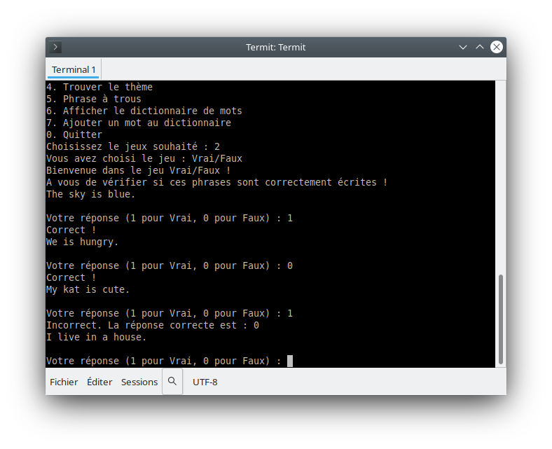
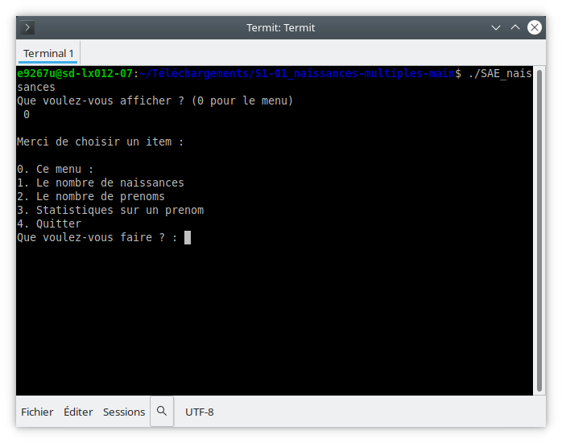

Applangues & Naissances Multiples
Deux petits projets C / fichiers - apprentissage des algorithmes et manipulation de données

Projet Applangues

Description & objectif
Le projet Applangues est un programme en C, inspiré d'un style “type Duolingo”, permettant d'apprendre des mots d'une langue. Il manipule des fichiers textes (dictionnaire, utilisateurs, progression). Ce projet m'a permis de me familiariser avec la manipulation de fichiers, les structures de données simples et les algorithmes.
Technologies & outils
Fonctionnalités principales
- Chargement / lecture d'un dictionnaire : charger les mots disponibles.
- Quiz / entraînement : poser des questions aléatoires selon progrès.
- Sauvegarde de la progression : fichier users pour mémoriser les réponses ou scores.
- Gestion du fichier utilisateur : création, lecture, mise à jour.
Défis & apprentissages
- Gestion des fichiers : ouverture, lecture ligne par ligne, parsing.
- Validation d'entrées : vérifier que les réponses des utilisateurs sont valides.
- Structures de mémoire : comment stocker les données en mémoire (structures, tableaux dynamiques ou statiques).
- Flux logique / boucle principale : concevoir le déroulé du quiz, affichages répétés.
Projet Naissances Multiples

Description & objectif
Le projet Naissances Multiples est un programme en C qui lit un fichier CSV contenant des données de naissance, et effectue des opérations d'analyse / affichage selon les données. C'était un exercice de manipulation de fichiers CSV, de parsing, et de traitement de données textuelles.
Technologies & outils
Fonctionnalités principales
- Lecture d'un fichier CSV : ouvrir et parcourir les lignes du fichier.
- Extraction des données : parseur pour séparer les champs (date, noms, etc.).
- Analyse / agrégation : calculs ou opérations selon les données (par exemple totaux, filtrage).
- Affichage formaté : présenter les résultats de façon lisible à l'écran.
Défis & apprentissages
- Parsing CSV : décomposer les lignes, gérer les séparateurs, les cas particuliers.
- Gestion des chaînes : manipulation de chaînes C (strtok, strcpy, etc.).
- Sécurité / robustesse : vérifier les formats des lignes, gérer les erreurs de fichier.
- Performance minimale : pour un fichier de taille non négligeable, optimiser lecture / traitement.